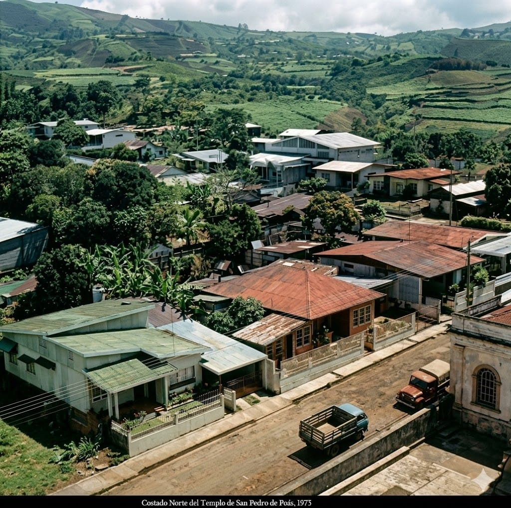
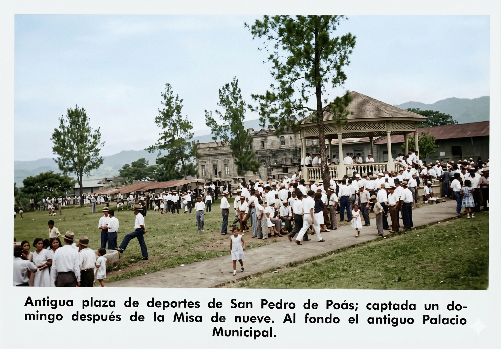
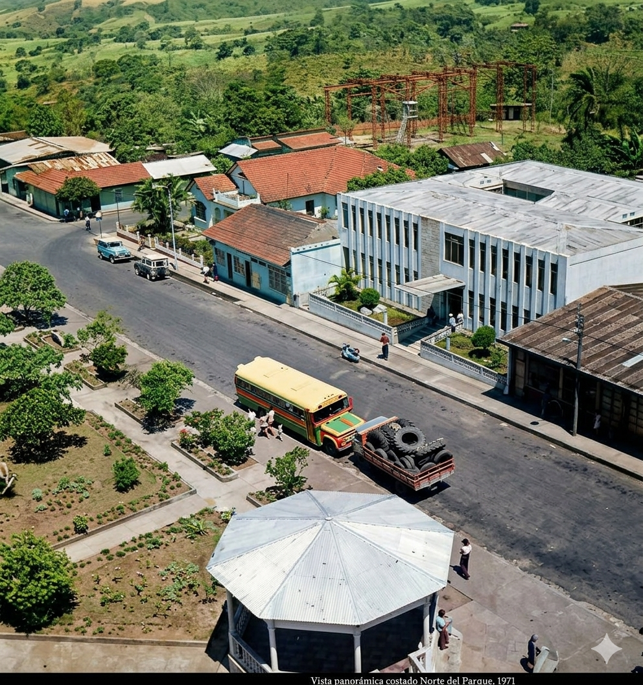
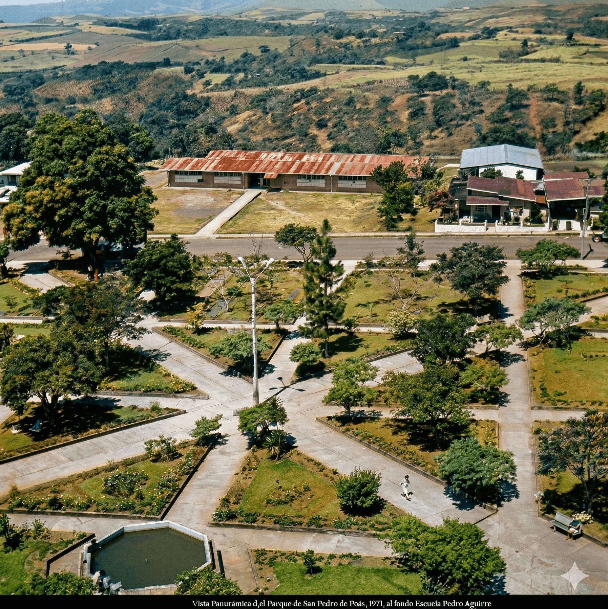

C. 1950s
Antigua plaza de deportes — domingo después de la Misa de Nueve. Al fondo el antiguo Palacio Municipal



Un viaje visual al pasado del cantón de Poás. Fotografías históricas que preservan la memoria colectiva de San Pedro y sus comunidades.


Antigua plaza de deportes — domingo después de la Misa de Nueve. Al fondo el antiguo Palacio Municipal


Compartí imágenes del pasado del cantón — fiestas, calles, personas, eventos. Tu memoria es parte de nuestra historia.